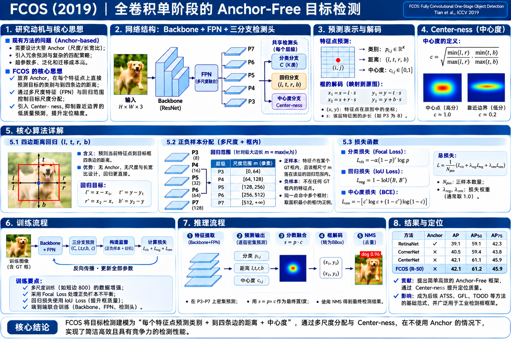

RetinaNet 的预测方式
每个 FPN 位置通常预设 9 个 Anchor，每个 Anchor 再分别做分类和回归。训练时必须计算 GT 与 Anchor 的 IoU 才能建立监督对应。Anchor 数量、尺度、宽高比会影响匹配与模型输出规模。
一个位置 → 9 × (K 个分类分数 + 4 个框参数)
既然目标框已经由四条边界确定，为什么每个位置必须先放置若干 Anchor，再判断哪个 Anchor 负责？FCOS 让目标内部的特征点直接预测到四条边的距离，完成分类和框定位。

历史问题不在于 Anchor 完全无效，而是它带来了若干框形状与匹配规则。
每个 FPN 位置通常预设 9 个 Anchor，每个 Anchor 再分别做分类和回归。训练时必须计算 GT 与 Anchor 的 IoU 才能建立监督对应。Anchor 数量、尺度、宽高比会影响匹配与模型输出规模。
只要特征图位置映射回原图后落在某个 GT 框内，该位置就有可能承担该目标的检测。网络直接学习四条边界的距离，不需要先构造 Anchor 框。
保留 RetinaNet 易用的多层特征框架，改变的是每个特征位置的预测对象。
每个位置对 K 类分别输出分类置信度，不使用 Anchor 维度 A，也不需要独立 Softmax 背景类；背景位置的全部类别目标为 0。
预测该位置到左、上、右、下边界的距离。原论文对不同 FPN 层使用可学习标量 sᵢ 与指数变换，让四个距离非负。
由分类/回归特征的额外分支预测 0～1 的质量分数，推理时用于降低偏离目标中心的位置产生的低质量框分数。
s 是该层下采样倍率。例如 P3 的 s=8，特征图位置 (20,15) 对应原图约 (164,124)。是否为正样本，是检查这个 映射回原图的特征点 是否落在某个 GT 框内，而不是检查它自己的感受野是否完全覆盖物体。
分类和定位采用两套各自的卷积子网络，避免直接用同一末端特征同时解决完全不同的目标；Center-ness 由单独输出层估计，作为第三项监督。注意：原文绘图是分类/Center-ness/回归三输出；后续消融表明把 Center-ness 放在回归特征侧还能改善结果。两者属于同一 FCOS 思路的不同配置，不应把现代实现细节倒灌成唯一的原版定义。
不是先猜一个中心和宽高，也不是 Anchor 偏移：预测的是“从当前位置到 GT 四条边有多远”。
蓝框是固定 GT。移动黄色点，算法会实时计算四个监督值，并展示这一个点的中心度。可以试试从中心移向边缘。
YOLOv1 的网格负责某一个中心落入的目标；CenterNet (Objects as Points) 寻找中心峰值并回归宽高。FCOS 的候选来源是 GT 框内部的一组特征点，每个正位置都能预测同一个目标框，因此它必须考虑密集点的质量与重叠歧义。
l/t/r/b 是相对当前特征点的局部距离，目标值具备平移等变性：图像与目标整体平移，若对应特征点也相应平移，其四边距离不变。监督形式更贴合逐位置的卷积预测。
框内位置可能很多，大目标小目标也会重叠；FCOS 通过 FPN 回归范围和最小面积归属约束。
| 特征层 | Stride | max(l,t,r,b) 允许范围（原图像素） | 如何理解 |
|---|---|---|---|
| P3 | 8 | (0, 64] | 短距离回归，适合较小目标 |
| P4 | 16 | (64,128] | 中小目标 |
| P5 | 32 | (128,256] | 中大目标 |
| P6 | 64 | (256,512] | 大目标 |
| P7 | 128 | (512,+∞) | 更大目标 |
这里判断的是“当前位置到目标最远的一条边的距离”，不是直接判断 GT 宽度/高度，也不是使用某层专属的 Anchor 面积。原论文阈值边界按范围记录；代码实现对边界采用包含式比较，恰好等于边界值可能出现在相邻层的候选中。
示意大框 A (蓝色) 与小框 B (绿色) 重叠。每个层级先筛选允许的距离范围，然后如果同时命中多个框，优先选择小面积 GT。
切到 P4：小框更可能被分配；切到 P5：同一点往往改由大框负责（因为小框距离不在 P5 范围内）。每层在空间上仍有自身离散的实际采样点，这里为说明判断公式使用同一连续坐标。
同一个目标里很多位置都是正样本，但靠近边界的位置更难精确回归到远侧边界。
处于目标几何中心时，左右与上下距离分别相等，c*=1；偏向某一条边时，距离比值变小，c* 接近 0。这无需另外标注一个中心点坐标。
网络单独预测 ĉ∈(0,1)，在正样本上用 BCE 监督。推理时，把预测分类分数和预测 Center-ness 相乘，以降低边缘位置低质量候选框的排序分数。
预测局部中心峰值；通过峰值寻找目标实例。
所有满足分配规则的框内位置可预测；Center-ness 衡量位置在框内的几何偏心程度。
回答“这是什么类”；Center-ness 回答“这个位置的框是否值得优先保留”。
此处是原论文描述的乘法；某些现代实现出于阈值刻度等考虑使用平方根融合，属于实现差异。
色块为固定目标内不同位置的理论 Center-ness 标签。点击格子选择一个位置，并修改该位置的类别概率，观察排序分数变化。
实验中使用理论标签 c* 演示评分；真实推理时使用网络预测的 ĉ，而不是直接读取 GT。理论中心度只表达位置偏心程度，不等于预测框真实 IoU。
FCOS 并没有因为不用 Anchor 就不需要负样本；海量背景位置仍由 Focal Loss 处理。
覆盖 正样本 + 背景位置；解决密集分类中容易背景太多的问题。对 K 类采取独立 Sigmoid 分类。
只在 前景正位置 上计算。通过预测的四个非负距离解码框，再与 GT 框计算 IoU；优化完整框的重叠而不是单独四个距离的 L1。
只在 前景正位置 上计算。监督目标是从 GT 四边距离计算出的连续中心度，不是二分类“这是目标中心/不是中心”。
这是一种常见的三分支总损失表达；原论文最先写出分类+回归的公式，随后在 Center-ness 小节加入质量分支 BCE。λ 为平衡权重，原论文取 1。不同实现对 IoU/GIoU 和归一化因子可能有所调整。
只比较分类损失；拉动预测正确类别概率 pₜ、γ，即可看到 Focal 相对于交叉熵的变化。曲线展示 α=1 的形状比较，右侧数值再应用 α。
理解哪些模块有参数、哪些规则只在构造监督标签；不要把样本分配本身误认成可训练的网络层。
通常采用 ImageNet 预训练的 ResNet Backbone，再构建 FPN、分类塔、回归塔与 Center-ness 层。分类末端可采用低先验概率偏置初始化以稳定密集背景训练。
将 GT 映射到所有 FPN 特征位置；判断是否在框内、尺度范围是否匹配、遇到重叠时选最小面积 GT；得到分类目标、四边距离目标与中心度目标。
分类 Focal 覆盖所有位置；IoU 与 Center-ness BCE 仅计算正样本。三者加权后反向传播，更新 Backbone、FPN、两座预测塔和 Center-ness 层。
| 项目 | 论文常见设置 | 含义 / 边界 |
|---|---|---|
| 数据 | MS COCO trainval35k / minival | 消融与基准评测；具体 test-dev 配置可能更长 |
| 输入 | 短边约 800，长边不超过 1333 | 缩放影响各 FPN 层匹配数量 |
| 优化 | SGD，Momentum 0.9，Weight decay 1e-4 | 典型 90k iterations，学习率阶段下降 |
| 分类损失 | Focal (α=0.25, γ=2) | 强调困难样本；并不移除负样本 |
| 回归损失 | IoU Loss（原始基线） | 后续增强表中有 GIoU Loss |
| 质量损失 | BCE 对 GT Center-ness | 只对前景位置定义 |
| 其他增强 | Center Sampling、GN、回归归一化等 | 要与原始基础机制区分版本与配置 |
没有 RPN、Proposal、RoI Pooling 或角点配对，但一个目标依旧可能由多个位置产生重叠框。
某个位置分类置信度可能很高，但在目标边缘预测的框较差。用预测 Center-ness 降低该框排序分数：
之后通常先做置信度筛选 / Top-k，再对各类别执行 NMS。真实实现的筛选顺序与阈值可以配置，不改变核心检测机制。
同一个 GT 框内部存在多个满足条件的位置，这些位置各自解码出相近矩形。它们并非“多个独立实例”，所以必须在候选集合中去重。
FCOS 对“去 Anchor”与“去 NMS”没有作等价承诺。NMS 是推理后的离散操作，训练通常不需要通过它反向传播。
五个预测框具有不同分类分数和质量分数。滑动阈值查看“分数融合→筛选→同类 NMS”的变化；示例仅演示一个类别。
它不是“把 CenterNet 换成 FPN”，也不是“RetinaNet 删除 Anchor 后直接保留所有规则”。
| 维度 | RetinaNet（2017） | CornerNet（2018） | CenterNet: Objects as Points（2019） | FCOS（2019） |
|---|---|---|---|---|
| 实例表示 | 预设 Anchor + 回归偏移 | 两个角点 + Embedding 配对 | 一个中心点 + WH | 目标内部特征点 + l/t/r/b |
| 候选位置 | 多层特征图 × 多形状 Anchor | 左上/右下角 Heatmap 峰 | 中心 Heatmap 峰 | FPN 各层每个空间位置 |
| 训练分配 | Anchor–GT IoU 规则 | GT 角点 + 实例关联 | GT 中心热图 + 中心处 WH | 框内点 + 距离层级 + 最小面积 |
| 输出 | 每位置 9K + 9×4 | 双角 Heatmap/Embedding/Offset | Heatmap K + WH 2 + Offset 2 | K + ltrb 4 + Center-ness 1 |
| 后处理 | 解码 + NMS | 角点配对 + Soft-NMS | 局部峰值；单尺度通常无需框 NMS | 逐点解码 + 分类 NMS |
| 核心贡献 | Focal Loss 解决密集负样本压制 | 成对关键点检测 | 只需中心点 | 将密集通用检测表述为逐点四边距离回归 |
去掉手工设定的 Anchor 尺度和宽高比，也不再需要 Anchor–GT IoU 匹配；输出结构轻、检测头简单。多层 FPN 缓解不同尺度与重叠 GT 的归属问题，Center-ness 抑制框边缘位置的低质量预测。
仍依赖 FPN 距离分级阈值与正负样本策略；重叠场景可能存在归属歧义；由于多点预测一个实例，需要 NMS。Center-ness 不是精确预测框 IoU 的万能质量度量，框精度仍由定位分支决定。
能否只靠这些问题复述一次 FCOS，而不是只背出“Anchor-Free + Center-ness”？
Tian et al. — FCOS: Fully Convolutional One-Stage Object Detection · ICCV 2019 · arXiv:1904.01355 · 官方 GitHub · 样本分配 / Loss 实现
约定：蓝框/几何图中的坐标是为了可操作演示而设计的教学数据，并非论文报告的实验测量。原始 FCOS 与提交后引入的 Center Sampling、GIoU、回归归一化、Center-ness 分支位置调整已区分。